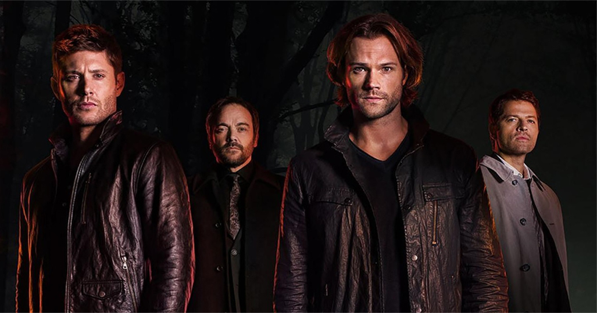

Nova Temporada
A série retornará em 11 de outubro, com a nova temporada, porém sem previsão de estréia no Brasil
Impala 67
Os clássico e famoso carro usado para caçar "coisas" tem uma história incrível.
Confira em Curiosidades.
Clássicos do Rock
Pra quem curte um bom rock clássico, vai adorar as músicas que já tocaram durante a série. Confira em Músicas Tema